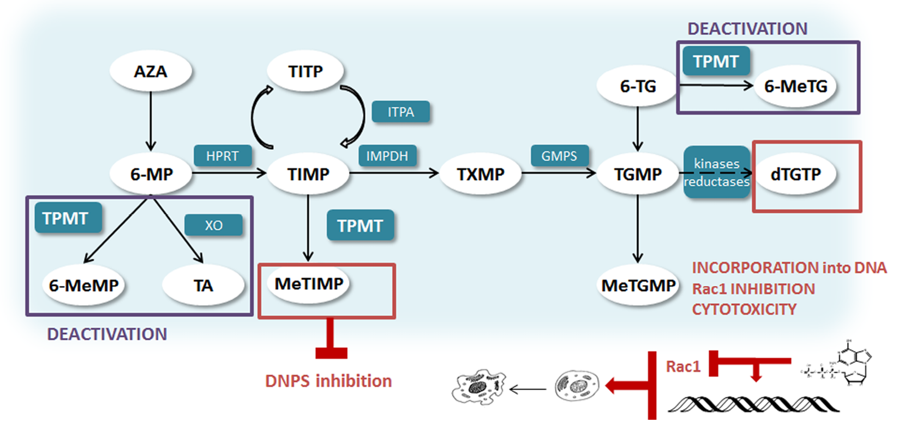
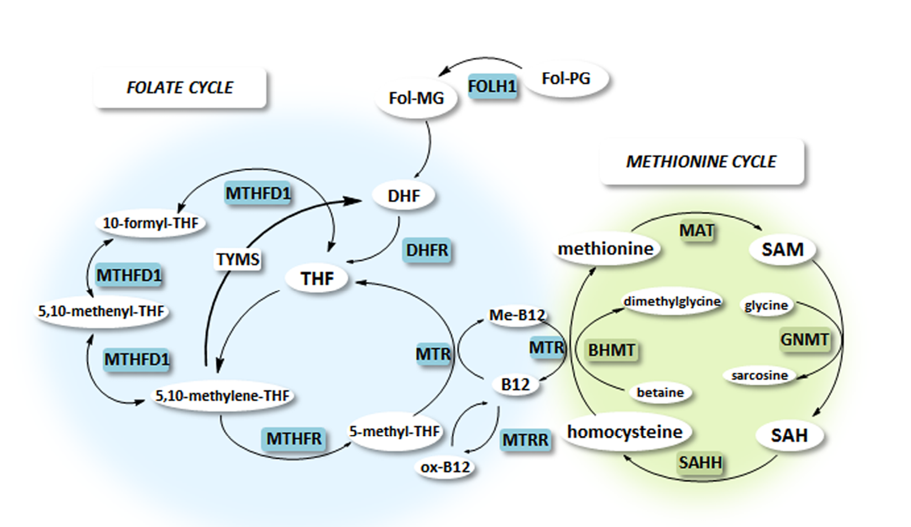

Pharmacogenetic markers in the therapy of childhood acute lymphoblastic leukemia
Abstract
Personalised medicine is a contemporary concept in medical practice, based on the observation that individuals respond differently to a particular therapy. Biomarkers, which include genetic markers, are a central element in the development of personalised medicine. Acute lymphoblastic leukaemia (ALL) therapy is among the most successful examples of the implementation of pharmacogenetic markers into clinical practice in order to adjust the dosage of drugs to an individual. ALL accounts for approximately 80 % of all forms of leukaemia occurring in children under the age of 15 years, making it the most common childhood cancer. Despite drastic improvement in the treatment of childhood ALL over the past decades, treatment is still unsuccessful in some patients either due to toxic effects, or due to the inefficacy of the drugs used, which leads to a recurrence of the disease. An additional problem is associated with the long-term toxic effects of chemotherapy, which may occur several years after the treatment has been completed. In order to improve safety and efficacy, numerous studies have been performed aiming to identify biomarkers which would enable tailoring treatment to the individual patient and improve treatment’s efficacy and safety.
Of these, the genetic factors associated with the toxicity of 6-mercaptopurine (6-MP), which is the cornerstone of maintenance treatment of ALL, have been studied most thoroughly. Thiopurine S- methyltransferase (TPMT) is a polymorphic enzyme which plays a major role in the deactivation of thiopurines and to a large extent accounts for the differences in individuals’ response to treatment. It has long been known that polymorphisms in the TPMT gene are largely responsible for reduced enzymatic activities, but numerous studies have shown that the accordance between genotype and enzyme activity is incomplete. In many studies published over the past decade, new pharmacogenetic markers have been associated with toxic effects of 6-MP as well as other drugs used for ALL therapy; however, they are not yet used in clinical practice.
1 Introduction
Acute lymphoblastic leukaemia (ALL) accounts for approximately 80 % of all forms of leukaemia occurring in children under the age of 15 years, making it the most common childhood cancer (1). In the last few decades, treatment of childhood ALL has advanced remarkably, with expected survival currently at almost 90 % (2). The most significant contribution to the improved outcome of ALL can be attributed to understanding the genetics of the disease and the discovery of numerous biomarkers that enable risk-based stratification of patients and the selection of the most effective treatment schemes. Biomarkers that are significant for predicting clinical outcome can generally be divided into two groups. The first group includes prognostic biomarkers, which are helpful tools in making a prognosis on the likely course of the disease, regardless of therapy. Based on these markers, patients are divided into subgroups with different expected outcomes of the disease (3). The second group includes predictive biomarkers that are helpful tools in predicting disease outcome, and also in identifying and setting the dose of the optimal drug. They are used to identify patients with greater likelihood of toxic effects, so treatment can be adapted accordingly (3). In the review article, we will outline the methods and approaches to studying biomarkers and summarise the latest discoveries in prognostic and predictive pharmacogenetic biomarkers in treating childhood ALL.
2 Approaches to studying biomarkers
Contemporary studies on new pharmacogenetic markers are conducted at different levels, from cell to animal models to retrospective and prospective clinical trials that are based on either hypothetical or non-hypothetical approaches. Traditional hypothetical approaches to biomarker discovery are based on correlation between an individual gene, protein or metabolite, and pharmacological response. The set hypothesis is based on previous knowledge and is tested with a specific experiment. The advancement in the development of high-throughput omics technologies that enable concurrent measurement of several thousand variables has led to the recognition of the so-called non-hypothetical approach. The approach is based on analysing the genome, the transcriptome, the proteome and/or the metabolome, and processing data using advanced bioinformatics and statistical tools, enabling wider understanding and new insight into molecular mechanisms responsible for the individual’s response to treatment.
Most published studies on pharmacogenetic markers that would enable personalised treatment of childhood ALL are based on the hypothetical approach – the so-called candidate gene studies.
3 Treating ALL
Combined chemotherapy plays an essential role in treating ALL. It is administered to patients in a period of two to three years. The intensity of treatment is determined by the risk of recurrence based on several clinical and laboratory factors, including age, white blood cell count at presentation, immunophenotype, cytogenetic and genetic abnormalities, the presence of extramedullary disease, leukaemia in the central nervous system and early response to therapy. Table 1 presents prognostic factors in greater detail.
|
Favourable prognosis |
Unfavourable prognosis |
|
Age at diagnosis |
|
|
•From 1 to < 10 years |
•< 1 year •≥ 10 years |
|
White blood cell count upon diagnosis |
|
|
•<50.000/μL |
•≥ 50.000/μL |
|
Immunophenotype |
|
|
•Common B-cell ALL (CD10 positive) |
•T-cell ALL •Pro B-cell ALL (CD10 positive) |
|
Leukaemia |
|
|
•Negative (CNS 1) |
•Positive (CNS 3) |
|
Cytogenetic and genetic features |
|
|
•DNA Index > 1.16 •hyperdiploidity (> 50 chromosomes) |
•DNA Index < 1.0 •hypoploidity (< 44 kromosomov) |
|
•t(12;21): ETV6-RUNX1 •znana tudi kot TEL-AML1 |
•t(9;22): BCR/ABL (chromosome Philadelphia); •t(4;11): MLL/AF4 •t(1;19): TCF3-PBX1 (also E2A-PBX1) •iAMP21 (worse prognosis only in case of treatment with standard regimes) |
|
•ERG deletion |
•IKZF1 deletion •Mutation into JAK2 |
|
Early response to treatment |
|
|
•<0.01% minimal residual disease (MRD) after 7 days of treatment with prednisone (determined from peripheral blood) and after the end of induction phase (determined from bone marrow) |
•<0.01% minimal residual disease (MRD) after 7 days of treatment with prednisone and a single intrathecal dose of methotrexate. |
ALL is treated based on different schemes developed by different expert cooperative groups, including the German Berlin-Frankfurt-Münster Group (BFM) (15), the group from St. Jude Children‘s Research Hospital (SJCRH) (16), the group from Dana-Farber Cancer Institute ALL Consortium (DFC) (17), Children’s Oncology Group (COG) (18) and the Nordic Society of Paediatric Haematology and Oncology (NOPHO) (19). All include chemotherapy with three phase of treatment:
1.The phase of initial intensive treatment (induction). The goal of this phase, usually lasting 4 to 6 weeks, is to achieve complete remission. Treatment is based on a combination of three to four agents, i.e. vincristine, corticosteroids (prednisone or dexamethasone), and L-asparaginase, with some regimens also adding an anthracycline (doxorubicin or daunorubicin). The fourth or the fifth agent (anthracycline and/or cyclophosphamide) is usually administered to children classified as high or very high risk (ALL) (20).
2.The phase of repeated intensive treatment (consolidation and reinduction). Consolidation phase aims to eradicate the remaining (residual) leukemic cells that have remained following induction phase. The therapy is intensive and combinations of therapeutic agents similar to the first phase are administered, with the addition of high doses of methrotrexate in combination with mercaptopurine (6-MP), vincristine and glucocorticoid. Patients are also administered L-asparaginase for 20–30 weeks. The consolidation phase is usually followed by the so-called reinduction treatment phase, where patients are administered chemotherapy very similar in composition to induction phase (20).
3.Maintenance phase usually lasts two years or more and is based on daily oral administration of 6-MP and weekly oral administration of methotrexate with or without periodic doses of vincristine and dexamethasone (20).
To prevent leukemic cells from spreading to the central nervous system (CNS), preventative therapy is directed against the CNS. This includes direct intrathecal and systemic administration of chemotherapy, and sometimes cranial radiation. For high risk ALL patients allogenic hematopoietic stem cell transplantation is pursued (20,21).
In the 1967–1973 period, ALL children in Slovenia were treated in accordance with a protocol that was adapted from different treatment schemes, while in the 1973–1983 period the treatment relied on Pediatric Oncology Group (POG). From 1983, different schemes were applied, adapted from the protocols of the German Berlin–Frankfurt-Münster group (ALL-BFM 83, ALL- BFM 86, ALL- BFM 90, ALL- BFM 95, study protocol ALL IC BFM 2002 and ALL BFM 2010) (1,22).
Despite immense progress in treating ALL in the last decades, in some cases treatment is still ineffective due to toxic side effects, some of which may be life-threatening, or the inefficiency of administered drugs, which leads to the recurrence of the disease (20). Major adverse side effects of vincristine include haematological toxicity and neurotoxicity (23), while the most significant side effects associated with L-asparaginase are allergic reactions, including anafilaxis, coagulation disorders and pancreatitis (24). Long-term use of glucocorticoids may lead to leukemic cells developing resistance to steroids and may cause adverse side effects, including frequent infections or sepsis, osteonecrosis, diabetes and myopathy (25). Methotrexate treatment may cause adverse side effects in the gastrointestinal tract, intestinal mucositis, hepatotoxicity, nephrotoxicity or bone marrow suppression and neurotoxicity (26). Use of 6-MP may lead to bone marrow suppression and hepatotoxicity, which may in some cases require hospitalisation and suspension of treatment (22,27) In addition to side effects during therapy, long-term toxic effects of chemotherapy are also problematic, and include cardiomyopathy, osteonecrosis and secondary tumours that may appear several years after the end of treatment (28,29).
4 Pharmacogenetic markers of toxicity in ALL treatment
Because of the said side effects that may appear while treating ALL, several recent studies focused on discovering new treatment-related biomarkers that would enable individually tailored drug selection and dosage. Among these, pharmacogenetic factors associated with the toxicity of 6-mercaptopurine in maintenance treatment of ALL (presented in chapters 4.1. and 4.2.) have been studied the most thoroughly, while pharmacogenetics factors associated with drugs used in other phases of treatment (presented in chapter 4.3) have been studied to a somewhat lesser extent.
4.1 Thiopurine methyltransferase (TPMT) as a predictive pharmacogenetic marker of toxicity of 6-mercaptopurine in maintenance treatment of ALL
The first studies of candidate genes in the treatment of ALL included studies of thiopurine-S-methyltransferase (TPMT), which is among the most successful clinically useful pharmacogenetic markers used to adjust the dosage of 6-MP. The latter is the basis for long-term maintenance treatment of ALL and is, together with azathioprine (AZA) and 6-thioguanine (6-TG), one of thiopurine agents. Thiopurines are prodrugs that, when metabolised, may have cytotoxic and immunosuppressive effects. Therefore, in addition to treating ALL, they are used in treating several autoimmune diseases, such as Chron’s disease and ulcerative colitis, and to prevent organ rejections following transplants (30).
The main mechanism of cytotoxic activity of thiopurines is the incorporation of 6-thioguanosines (6-TGN) into DNA. This initiates the mismatch repair mechanism, which is unsuccessful and leads to a break in the daughter strand of DNA. In the next phase, DNA damage leads to cell cycle arrest and initiates programmed cell death (apoptosis) (31). Moreover, 6-TGN may trigger apoptosis directly via the mitochondrial pathway, where Rac1, Bcl-xL and NF-κB proteins are involved in the signalling pathway (32). A potential mechanism to achieve an immunosuppressive effect, which probably contributes less to the cytotoxic effect, is inhibition of
Figure 1 presents a schematic of thiopurine metabolism, which has three main pathways. Phosphoribosylation by hypoxanthine-guanine phosphoribosyltransferase (HPRT) is the activation pathway that leads to the synthesis of active 6-TGN via numerous intermediate metabolites, such as thioinosine monophosphate (TIMP). Thiopurine deactivation pathways include oxidation by xanthine oxidase (XO) and S-methylation by TPMT (45). Because XO is located primarily in the liver and the intestines, the enzyme plays a significant role in first-pass metabolism, metabolising some 84 % of the 6-MP dose into inactive thiouric acid. Despite being a polymorphic enzyme, which means that enzyme activity in individuals varies, studies have not established a significant influence on the outcome of ALL treatment (34). The other thiopurine deactivation pathway, which plays a major role particularly in blood-forming tissues, is via

Active metabolites have red outline and description of action mechanism, inactive metabolites have violet outline 6-MP: 6-metylmercaptopurine; 6-MeMP: 6-metylmercaptopurine; 6-MeTG: 6- methylthioguanine; 6-TG: 6-thioguanine; AZA: azathioprine; DNPS:
Thiopurine S-methyltransferase (TPMT; EC 2.1.1.67) is a cytosolic enzyme that belongs to S-adenosylmethionine-dependent methyltransferase family. Although its role in thiopurine metabolism has been well assessed, its endogenous role and endogenous substrate are still unknown. TPMT enzyme activity in inviduals varies quite markedly. The distribution of TPMT activity in Caucasian population is trimodal, with 89–94 % of people possessing high or normal TPMT activity, 6–11 % intermediate and 0.3 % low enzyme activity (35).
SAM is synthesised from methionine in the methionine cycle, and is converted to S-adenosylhomocysteine (SAH) after the transfer of the methyl group, and then to homocysteine. Homocysteine then enters the transsulfuration pathway or is converted back to methionine, with 5-methyltetrahydrofolate (5-methyl-THF) as the substrate in the reaction. The conversion is catalysed by 5,10-methylenetetrahydrofolate reductase (MTHFR), one of the most significant enzymes in the folate cycle (Figure 2).

B12: vitamin B12; oxi-B12: oxidised form of vitamin B12; BHMT: betaine-homocysteine methyltransferase; DHFR: dihydrofolate reductase; DHF: dihydrofolate; FOLH1: folate hydrolase; Fol-MG: folate monoglutamate; Fol-PG: folate polyglutamate; GNMT: glycine N-methyltransferase; Me-B12: methylysed vitamin B12; MAT: methionine adenosyltransferase; MTHFD1: methylenetetrahydrofolate dehydrogenase 1; MTHFR: 5,10-methylenetetrahydrofolate reductase, MTR: methionine synthase; MTRR: methionine synthase reductase; SAM: S-adenosyl methionine; SAH: S-adenosyl-L-homocysteine; TYMS: thymidylate synthase; SHMT: serine hydroxymethyltransferase; THF: tetrahydrofolate.
4.2 Other pharmacogenetic factors related to toxicity in the maintenance treastment of ALL
Several studies have been published in recent years that show that several polymorphisms in the gene for Nudix hydrolase 15 (
In addition,
4.3 Pharmacogenetic factors related to toxic effects in other phases of ALL treatment
Pharmacogenetic factors related to the toxicity and efficacy of methotrexate that is used in high doses in the consolidation phase of paediatric ALL treatment have also been widely studied in recent years. Candidate gene studies mostly focused on common polymorphisms in the genes for enzymes related to the folate cycle, such as MTHFR, methionine synthase reductase (MTRR), thymidylate syntase (TYMS), dihydrofolate reductase (DHFR), methylenetetrahydrofolate dehydrogenase (MTHFD1) and serine hydroxymethyltransferase (SHMT1) (57-60). These, the most studied were definitely polymorphisms
|
Drug and gene |
Degree of evidence* |
|
6-mercaptopurine (6-MP) |
|
|
|
1A |
|
|
1B |
|
|
3 |
|
Methotrexate |
|
|
|
2A |
|
|
2B |
|
|
3 |
|
Asparaginase |
|
|
|
3 |
|
Vincristine |
|
|
|
2B |
|
|
3 |
|
Glucocorticoids (dexamethasone) |
|
|
|
3 |
*Classification of the degree of evidence: (1A) There are clinical guidelines from the Clinical Pharmacogenetics Implementation Consortium (CPIC) or relevant medical consortiums for the combinations of gene polymorphisms and drugs. (1B) There is numerous hard evidence on association with toxicity or efficacy for a combination of gene polymorphisms that have been demonstrated in several independent studies. (2A) The combination of the gene polymorphism and drug is among major pharmagogen with known functional significance. (2B) There is medium evidence on the association with toxicity or efficacy for a combination of a polymorphism and a drug. While the association has been presented in over one study, there are also studies that do not confirm the link or the influence of polymorphism is little. (3) Association of the combination of polymorphism and drug with toxicity or efficacy is presented in a single yet unrepeated study or evidence on association from different studies are inconsistent.
Pharmacogenetic markers associated with the toxicity of the remaining drugs used for treating ALL have been less examined so far. Individual studies have found that individuals carrying HLA-DRB*07:01 allele have a higher risk of hypersensitivity to L-asparaginase, which is used in ALL both in the induction and consolidation phase (71). Some studies have also associated several polymorphisms in the
5 Conclusion
Contemporary approaches in medicine focus on personalised treatment that may, compared to the traditional approach, enable more effective and safe use of drugs, decrease side effects and ensure cost-effective pharmaceutical care. Such an approach is based on selective and sensitive biomarker, so their examination has become a central element both in drug development and after acquiring marketing authorization for a medicinal product (77).
One of the first predictive pharmacogenetics markers that was successfully introduced in clinical practice was